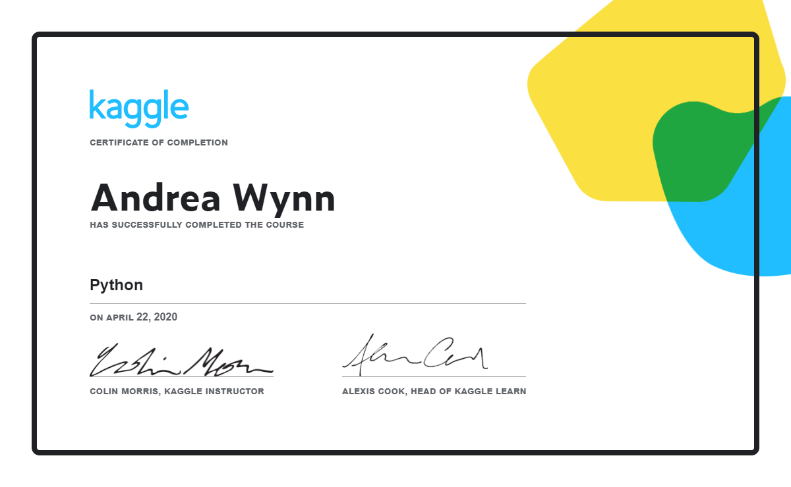

Prueba: Evaluativa
Asignatura: Python
Temario: RA6 y RA7
Enunciado
Para superar la RA6 y RA7 es necesario realizar la formación https://www.kaggle.com/learn/python y obtener el certificado final.
El curso está dividido en 7 secciones y cada sección tiene un test de evaluación. Para superar ambas RA6 y RA7 es necesario superar los tests de evaluación correspondientes y obtener el certificado final.
Ejemplo de certificación
